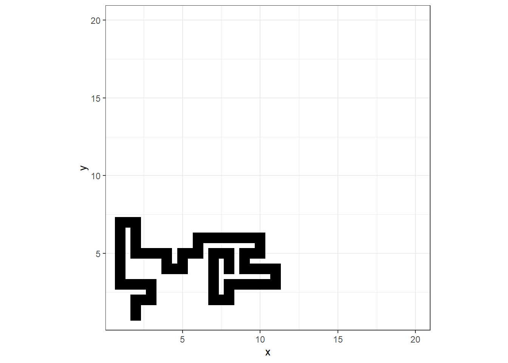
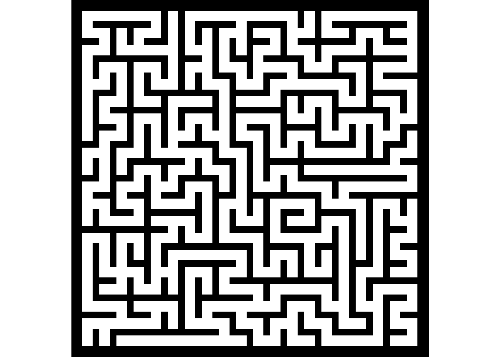
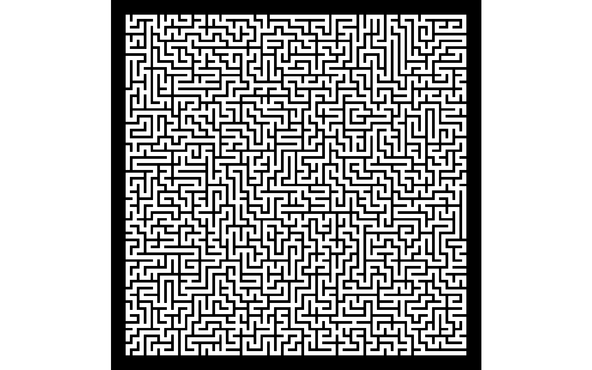
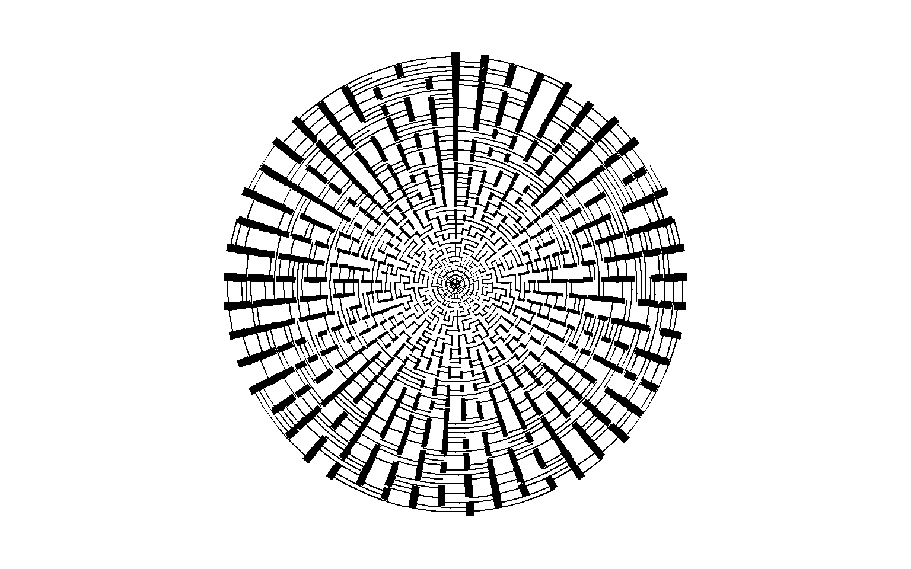

# crate the maze matrix
maze_size <- 20
m <- matrix(0, nrow=maze_size, ncol=maze_size)
# choose a starting position
r_start <- 1; c_start <- 2
# segment counter
s_count <- 1
m[1, 2] <- 1 # change starting position value
set.seed(2)Maze Generator
R
ggplot2
generative art
A stochastic method for generating mazes.
This generative art seems less artsy to me, but the idea of generating a maze was interesting. I found the mazegenerator GitHub repo that described the algorithm simply as a random walk and displayed a .gif of the maze being incrementally created. It’s straight forward enough that that bit of information and a visual is all you need to figure it out.
Generate the Data
The way this algorithm works is that you choose the dimensions of the maze and a random starting spot for the maze path to begin. I started with a 20x20 grid, which I represented as a 20x20 matrix of 0s (m) and a starting point of row 1, column 2 (r_start and c_start below). When the maze path is “drawn” on a grid coordinate, I change the corresponding matrix value of 0 to a 1. This is how I keep track of where in the grid I have and have not visited. For plotting purposes, I know I’ll have to keep track of each path segment, so I create a counter s_start.
From the starting point, I’m going to randomly pick a direction to move in. Valid moves are either up, down, left, or right - no diagonal moves are allowed in a maze. At each step, I know I’ll need to check what are the valid next moves. The get_valid_moves() function returns a valid vector of length 4. I initialize the vector with all FALSE values. If a move up is valid (doesn’t take me off the board or to a position that’s already been visited), I change the first index to TRUE. Same thing with down, left, and right which are stored in the 2nd, 3rd, and 4th index positions.
Next is the get_segment() function. I keep track of all of the row and column pairs visited with vectors ro and co. For convenience, the idx variable just keeps track of the length of these vectors, so I can save some typing. After getting length, I check for valid moves from that position. If there aren’t any, the get_valid_moves() function returns a vector of all FALSE values, and that’s the criteria to break out of the repeat loop. Otherwise, I randomly sample from the available valid moves using the index of the TRUE values in the valid_moves vector. For example, if up and left are the only valid moves, valid_moves will contain (TRUE, FALSE, TRUE, FALSE), and so I randomly sample either index 1 or 3.
I discovered that the sample() function doesn’t behave as I expected if there’s only one TRUE index. The help for sample() confirms this:
Note
If x has length 1, is numeric (in the sense of is.numeric) and x >= 1, sampling via sample takes place from 1:x. Note that this convenience feature may lead to undesired behaviour when x is of varying length in calls such as sample(x).
In other words if valid_moves is (FALSE, FALSE, FALSE, TRUE), then which(valid_moves) = 4 and then sample(4) will sample the vector 1:4 instead of just returning 4. Not what I want, so that’s the reason for the ifelse() statement. The rest of the function just adds the new row and column values to the ro and co vectors and updates the maze matrix value for the corresponding new move. Once the segment gets stuck somewhere because a lack of a valid move, the ro and co vectors and the segment number are put in a dataframe and returned.
get_valid_moves <- function(rw, cl, maze){
valid <- rep(FALSE, 4) #up, down, left, right
if (rw > 1) if(m[rw-1, cl] != 1) valid[1] <- TRUE # up
if (rw < maze) if(m[rw+1, cl] != 1) valid[2] <- TRUE # down
if (cl > 1) if(m[rw, cl-1] != 1) valid[3] <- TRUE # left
if (cl < maze) if(m[rw, cl+1] != 1) valid[4] <- TRUE # right
valid
}
get_segment <- function(ro, co, sg, maze){
repeat{
idx <- length(ro)
# check for valid moves
valid_moves <- get_valid_moves(ro[idx], co[idx], maze)
if (sum(valid_moves) == 0) break # end of the sequence
# note: if only one valid move, sample misbehaves
move <- ifelse(sum(valid_moves) == 1, which(valid_moves), sample(which(valid_moves), 1))
if (move == 1){
ro <- c(ro, ro[idx] - 1)
co <- c(co, co[idx])}
if (move == 2){
ro <- c(ro, ro[idx] + 1)
co <- c(co, co[idx])}
if (move == 3){
ro <- c(ro, ro[idx])
co <- c(co, co[idx] - 1)}
if (move == 4){
ro <- c(ro, ro[idx])
co <- c(co, co[idx] + 1)}
m[ro[idx+1], co[idx+1]] <<- 1
}
return(data.frame(x=co, y=ro, seg=sg))
}
df <- get_segment(r_start, c_start, s_count, maze_size)
head(df)At this point I have a matrix with one maze segment that got stuck somewhere. Let’s visualize it to make sure nothing’s wonky.
library(ggplot2)
theme_set(theme_bw())
ggplot(df) +
geom_path(aes(x=x, y=y, group=seg), size=5, linejoin = "mitre", lineend = "square") +
coord_fixed() +
xlim(1, maze_size) + ylim(1, maze_size)
Recall the segment started at row 1 and column 2, so that translates into plotting at x=2, y=1 in the lower left. Following the segment from there, we see that it wandered around, stayed in bounds (yay!), and eventually trapped itself.
That seemed to work as expected, so now what? Now I need to pick a starting point for the next path segment. After watching the .gif I mentioned, I noticed that the next segment always started somewhere along the black line where there is a valid adjacent move. Seems like I ought to be able to pick a spot randomly to start from - again, as long as there’s an adjacent valid move.
The while loop below just needs a few lines to finish the maze. I get valid next starting positions by finding which indices of the m matrix are 1, and then I check which of those indices have a valid adjacent move. I randomly sample from these and pass the row and column number to the get_segment() function. Once all matrix values are 1, the loop stops.
library(purrr)
library(dplyr)
while (sum(m) < maze_size^2){
# get the indices of 1 values from the m matrix
ones <- data.frame(which(m==1, arr.ind=TRUE))
# get the indices that have an open adjacent position
ones$open <- map2(ones[, 1], ones[, 2], ~sum(get_valid_moves(.x, .y, maze_size))>0) %>% unlist()
# filter out the blocked positions
ones <- ones[ones$open, ]
# get a random new starting position
if (nrow(ones) > 1) ones <- ones[sample(nrow(ones), 1), ]
s_count <- s_count + 1
df <- bind_rows(df, get_segment(ones$row, ones$col, s_count, maze_size))
}Visualizations
Here’s the complete maze. I switched color schemes to be more like what you’d see on a piece of paper - a maze where you follow the white paths. Looks great, I think!
ggplot(df) +
geom_path(aes(x=x, y=y, group=seg),
color = "white", size=5, linejoin = "mitre", lineend = "square") +
coord_fixed() +
theme_void() +
theme(panel.background = element_rect(fill = 'black', color = 'black'))
Before I continue, this is a good spot to recreate the .gif I saw. I’ll use the gganimate package to display the maze as it’s generated.
library(gganimate)
anim <-
df %>% mutate(frame = row_number()) %>%
ggplot() +
geom_path(aes(x=x, y=y, group=seg),
color = "white", size=2, linejoin = "mitre", lineend = "square") +
coord_fixed() +
theme_void() +
theme(panel.background = element_rect(fill = 'black', color = 'black')) +
transition_reveal(frame)
animate(anim, end_pause=20, res=300, nframes=nrow(df) + 20)How about a bigger maze? Let’s try 50x50.
maze_size <- 50
m <- matrix(0, nrow=maze_size, ncol=maze_size)
r_start <- 1; c_start <- 2; s_count <- 1
m[1, 2] <- 1
df <- get_segment(r_start, c_start, s_count, maze_size)
while (sum(m) < maze_size^2){
ones <- data.frame(which(m==1, arr.ind=TRUE))
ones$open <- map2(ones[, 1], ones[, 2], ~sum(get_valid_moves(.x, .y, maze_size))>0) %>% unlist()
ones <- ones[ones$open, ]
if (nrow(ones) > 1) ones <- ones[sample(nrow(ones), 1), ]
s_count <- s_count + 1
df <- bind_rows(df, get_segment(ones$row, ones$col, s_count, maze_size))
}
ggplot(df) +
geom_path(aes(x=x, y=y, group=seg),
color = "white", size=2, linejoin = "mitre", lineend = "square") +
coord_fixed() +
theme_void() +
theme(panel.background = element_rect(fill = 'black', color = 'black'))
The aRtsy package shows a maze plotted in polar coordinates, which is a cool effect. I noticed that the author made the “spokes” of the maze increase in size as they extended toward the perimeter. I’ll try to recreate that here.
library(tidyr)
df <- df %>%
mutate(s = ifelse(y != lead(y), y/20, 0.5))
ggplot(df) +
geom_path(aes(x=x, y=y, group=seg),
size = df$s,
color = "black", linejoin = "mitre", lineend = "square") +
coord_polar() +
theme_void() +
theme(panel.background = element_rect(fill = 'white', color = 'white'))
You can click here for my Shiny app to generate your own art using this and other algorithms. Enjoy!